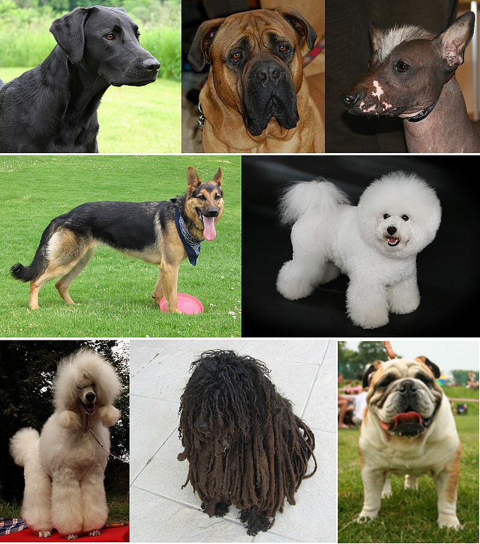
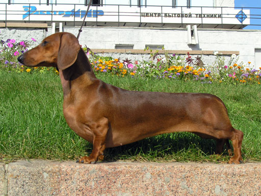

Pes domácí
Je největší domestikovaná šelma a jedno z nejstarších domestikovaných zvířat vůbec.
Provází člověka minimálně 14 tisíc let.
Obecně se předpokládá, že se jedná o zdomácnělého a umělým výběrem změněného vlka obecného.
Celosvětová populace psů je odhadována na 500 miliónů, přičemž toulavých a opuštěných psů je minimálně 370 miliónů.
Nezisková organizace 600million ovšem odhaduje jenom počet toulavých psů na světě právě na 600 miliónů zvířat.
Nejbližší příbuzný domácího psa je vlk obecný od psa se liší v nanejvýš 0,2 % sekvence mtDNA.

Strava
Patří mezi ně například maso, granule, BARF, ale i zbytky po lidské potravě.
Granule je obecný termín pro krmiva vyráběná extruzí.
Ale méně kvalitní granule nebo granule s nevhodným složením mohou poškozovat psí zdraví.
Granulí s lepším složením se také může podávat méně, neboť jsou výživnější.
Doporučuje se granule střídat i s jinými druhy krmiv.
Mezi stravu pro psa nebezpečnou patří čokoláda, hrozny a hrozinky, avokádo a vařené kuřecí kosti

Wikipedia